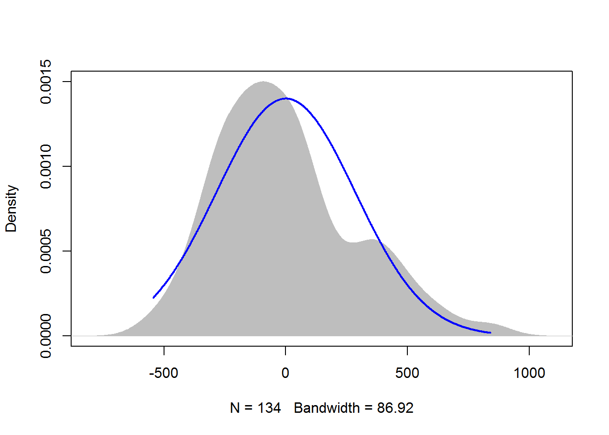

Chapter 7 Statistical Modeling and Model Interpretation
7.1 Parametric statistical tests
T-test, analysis of variance, and linear regression are all parametric statistical tests. They are used when the dependent variable is an interval/ratio data variable, such as length, height, weight.
Advantages: - your audience will likely be familiar with the techniques and interpretation of the results. - These tests are also often more flexible and more powerful than their nonparametric analogues.
Drawback: - all parametric tests assume something about the distribution of the underlying data. If these assumptions are violated, the resultant test statistics will not be valid, and the tests will not be as powerful as for cases when assumptions are met. - Count data may not be appropriate for common parametric tests. Instead, count data could be analyzed either by using tests for nominal data or by using regression methods appropriate for count data, such as Poisson regression, negative binomial regression, and zero-inflated Poisson regression.
Assumptions - Random sampling The data captured in the sample are randomly chosen from the population as a whole. Selection bias will obviously affect the validity of the outcome of the analysis.
Independent observations Tests will also assume that observations are independent of one another, except when the analysis takes non-independence into account. For example, in repeated measures experiments, the same subject is observed over time. Students with a high test score on one date to have a high test score on subsequent dates. In this case the observation on one date would not be independent of observations on other dates.The independence of observation is often assumed from good experimental design. Also, data or residuals can be plotted, for example to see if observations from one date are correlated to those for another date.
Normal distribution of data or residuals Parametric tests assume that the data come from a population of known distribution, such as normal distribution. That is, the data are normally distributed once the effects of the variables in the model are taken into account.
Practically speaking, this means that the residuals from the analysis should be normally distributed. This will usually be assessed with a histogram of residuals, a density plot, or with quantile–quantile plot.
A select number of tests (limited to one-sample t-test, two-sample t-test, and paired t-test) will require that data itself be normally distributed.For other tests, the distribution of the residuals will be investigated.
Residuals from an analysis are also commonly called errors. They are the difference between the observations and the value predicted by the model. For example, if the calculated mean of a sample is 10, and one observation is 12, the residual for this observation is 2. If another observation is 7, the residual for this observation is –3.
Be careful not to get confused about this assumption. You may see discussion about how “data” should be normally distributed for parametric tests. This is usually wrong-headed. The t-test assumes that the observations for each group are normally distributed, but if there is a difference in the groups, we might expect a bi-modal distribution, not a simple normal distribution, for the combined data. This is why in most cases we look at the distribution of the residuals, not the raw data.
Assessing model assumptions
- Using formal tests to assess normality of residuals There are formal tests to assess the normality of residuals. Common tests include Shapiro-Wilk, Anderson–Darling, Kolmogorov–Smirnov, and D’Agostino–Pearson. However, their results are dependent on sample size. When the sample size is large, the tests may indicate a statistically significant departure from normality, even if that departure is small. And when sample sizes are small, they won’t detect departures from normality. In each case, the null hypothesis is that the data distribution is not different from normal. That is, a significant p-value (p < 0.05) suggests that data are not normally distributed.
library(tidyverse)
head(diamonds)## # A tibble: 6 x 10
## carat cut color clarity depth table price x y z
## <dbl> <ord> <ord> <ord> <dbl> <dbl> <int> <dbl> <dbl> <dbl>
## 1 0.23 Ideal E SI2 61.5 55 326 3.95 3.98 2.43
## 2 0.21 Premium E SI1 59.8 61 326 3.89 3.84 2.31
## 3 0.23 Good E VS1 56.9 65 327 4.05 4.07 2.31
## 4 0.290 Premium I VS2 62.4 58 334 4.2 4.23 2.63
## 5 0.31 Good J SI2 63.3 58 335 4.34 4.35 2.75
## 6 0.24 Very Good J VVS2 62.8 57 336 3.94 3.96 2.48summary(diamonds)## carat cut color clarity
## Min. :0.2000 Fair : 1610 D: 6775 SI1 :13065
## 1st Qu.:0.4000 Good : 4906 E: 9797 VS2 :12258
## Median :0.7000 Very Good:12082 F: 9542 SI2 : 9194
## Mean :0.7979 Premium :13791 G:11292 VS1 : 8171
## 3rd Qu.:1.0400 Ideal :21551 H: 8304 VVS2 : 5066
## Max. :5.0100 I: 5422 VVS1 : 3655
## J: 2808 (Other): 2531
## depth table price x
## Min. :43.00 Min. :43.00 Min. : 326 Min. : 0.000
## 1st Qu.:61.00 1st Qu.:56.00 1st Qu.: 950 1st Qu.: 4.710
## Median :61.80 Median :57.00 Median : 2401 Median : 5.700
## Mean :61.75 Mean :57.46 Mean : 3933 Mean : 5.731
## 3rd Qu.:62.50 3rd Qu.:59.00 3rd Qu.: 5324 3rd Qu.: 6.540
## Max. :79.00 Max. :95.00 Max. :18823 Max. :10.740
##
## y z
## Min. : 0.000 Min. : 0.000
## 1st Qu.: 4.720 1st Qu.: 2.910
## Median : 5.710 Median : 3.530
## Mean : 5.735 Mean : 3.539
## 3rd Qu.: 6.540 3rd Qu.: 4.040
## Max. :58.900 Max. :31.800
## test_data = diamonds%>%
filter(cut %in% c("Fair", "Ideal" ),
carat == 0.7,
color %in% c("G", "F" ),
clarity %in% c("SI1", "VS2" ))
table(test_data$cut)##
## Fair Good Very Good Premium Ideal
## 21 0 0 0 113ggplot(test_data,
aes(price, fill = cut)) +
geom_density(position="dodge",
alpha = 0.6)## Warning: Width not defined. Set with `position_dodge(width = ?)`
#Define a linear model
model = lm(price ~ cut + color,
data = test_data)
#Shapiro–Wilk normality test
x = residuals(model)
shapiro.test(x)##
## Shapiro-Wilk normality test
##
## data: x
## W = 0.96048, p-value = 0.0006383# Anderson-Darling normality test
if(!require(nortest)){install.packages("nortest")}## Loading required package: nortestlibrary(nortest)
x = residuals(model)
ad.test(x)##
## Anderson-Darling normality test
##
## data: x
## A = 1.7123, p-value = 0.0002071# One-sample Kolmogorov-Smirnov test
x = residuals(model)
ks.test(x,
"pnorm",
mean = mean(x),
sd = sd(x))## Warning in ks.test(x, "pnorm", mean = mean(x), sd = sd(x)): ties should not
## be present for the Kolmogorov-Smirnov test##
## One-sample Kolmogorov-Smirnov test
##
## data: x
## D = 0.096286, p-value = 0.1666
## alternative hypothesis: two-sided# D'Agostino Normality Test
if(!require(fBasics)){install.packages("fBasics")}## Loading required package: fBasics## Loading required package: timeDate##
## Attaching package: 'timeDate'## The following objects are masked from 'package:PerformanceAnalytics':
##
## kurtosis, skewness## Loading required package: timeSeries##
## Attaching package: 'timeSeries'## The following object is masked from 'package:zoo':
##
## time<-## The following object is masked from 'package:psych':
##
## outlier##
## Attaching package: 'fBasics'## The following object is masked from 'package:psych':
##
## trlibrary(fBasics)
x = residuals(model)
dagoTest(x)##
## Title:
## D'Agostino Normality Test
##
## Test Results:
## STATISTIC:
## Chi2 | Omnibus: 10.2249
## Z3 | Skewness: 3.1412
## Z4 | Kurtosis: 0.5981
## P VALUE:
## Omnibus Test: 0.006021
## Skewness Test: 0.001683
## Kurtosis Test: 0.5498
##
## Description:
## Sat Oct 05 20:36:08 2019 by user: Juqiang Chen- Skew and kurtosis There are no definitive guidelines as to what range of skew or kurtosis are acceptable for considering residuals to be normally distributed.
In general, I would not recommend relying on skew and kurtosis calculations, but instead use histograms and other plots.
If I were forced to give advice for skewness calculations, I might say, be cautious if the absolute value is > 0.5, and consider it not normally distributed if the absolute value is > 1.0. Some authors use 2.0 as a cutoff for normality, and others use a higher limit for kurtosis.
library(psych)
x = residuals(model)
describe(x,
type=2) ## vars n mean sd median trimmed mad min max range skew
## X1 1 134 0 284.79 -40.84 -20.5 262.42 -543.69 839.01 1382.7 0.7
## kurtosis se
## X1 0.18 24.6Using visual inspection to assess the normality of residuals Usually, the best method to see if model residuals meet the assumptions of normal distribution and homoscedasticity are to plot them and inspect the plots visually.
Histogram with normal curve A histogram of the residuals should be approximately normal, without excessive skew or kurtosis. Adding a normal curve with the same mean and standard deviation as the data helps to assess the histogram.
x = residuals(model)
library(rcompanion)
plotNormalHistogram(residuals(model))  Kernel density plot with normal curve A kernel density plot is similar to a histogram, but is smoothed into a curve. Sometimes a density plot gives a better representation of the distribution of data, because the appearance of the histogram depends upon how many bins are used.
Kernel density plot with normal curve A kernel density plot is similar to a histogram, but is smoothed into a curve. Sometimes a density plot gives a better representation of the distribution of data, because the appearance of the histogram depends upon how many bins are used.
The plotNormalDensity function will produce this plot. Options include those for the plot function, as well as adjust, bw, and kernel which are passed to the density function. col1, col2, and col3 change plot colors, and lwd changes line thickness.
library(rcompanion)
x = residuals(model)
plotNormalDensity(x,
adjust = 1) ### Decrease this number
### to make line less smooth7.2 formal tests for homogeneity of variance
In each case, the null hypothesis is that the variance among groups is not different. That is, a significant p-value (p < 0.05) suggests that the variance among groups is different.
#Define a linear model
model = lm(price ~ cut + color,
data = test_data)
#Bartlett’s test for homogeneity of variance
#Bartlett’s test is known to be sensitive to non-normality in samples. That is, non-normal samples can result in a significant test due to the non-normality.
x = residuals(model)
bartlett.test(x ~ interaction(cut, color),
data = test_data)##
## Bartlett test of homogeneity of variances
##
## data: x by interaction(cut, color)
## Bartlett's K-squared = 39.068, df = 3, p-value = 1.679e-08# Levene’s test for homogeneity of variance
# Levene’s test is an alternative to Bartlett’s that is supposedly less sensitive to departures from normality in the data.
if(!require(car)){install.packages("car")}## Loading required package: car## Loading required package: carData##
## Attaching package: 'car'## The following object is masked from 'package:fBasics':
##
## densityPlot## The following object is masked from 'package:psych':
##
## logit## The following object is masked from 'package:dplyr':
##
## recode## The following object is masked from 'package:purrr':
##
## somelibrary(car)
x = residuals(model)
leveneTest(x ~ cut * color,
data=test_data,
center=mean) ### Use the original Levene’s test## Levene's Test for Homogeneity of Variance (center = mean)
## Df F value Pr(>F)
## group 3 8.76 2.468e-05 ***
## 130
## ---
## Signif. codes: 0 '***' 0.001 '**' 0.01 '*' 0.05 '.' 0.1 ' ' 1# Brown–Forsythe or robust Levene’s test
# The Brown–Forsythe modification of Levene’s test makes it more robust to departures in normality of the data.
#if(!require(car)){install.packages("car")}
library(car)
x = residuals(model)
leveneTest(x ~ cut * color, data=test_data)## Levene's Test for Homogeneity of Variance (center = median)
## Df F value Pr(>F)
## group 3 8.5541 3.163e-05 ***
## 130
## ---
## Signif. codes: 0 '***' 0.001 '**' 0.01 '*' 0.05 '.' 0.1 ' ' 1#if(!require(lawstat)){install.packages("lawstat")}
library(lawstat)##
## Attaching package: 'lawstat'## The following object is masked from 'package:car':
##
## levene.testx = residuals(model)
levene.test(x, interaction(test_data$cut, test_data$color))##
## Modified robust Brown-Forsythe Levene-type test based on the
## absolute deviations from the median
##
## data: x
## Test Statistic = 0.51854, p-value = 0.6702# Fligner-Killeen test
# The Fligner-Killeen test is another test for homogeneity of variances that is robust to departures in normality of the data.
x = residuals(model)
fligner.test(x ~ interaction(cut, color), data=test_data)##
## Fligner-Killeen test of homogeneity of variances
##
## data: x by interaction(cut, color)
## Fligner-Killeen:med chi-squared = 11.948, df = 3, p-value =
## 0.007562